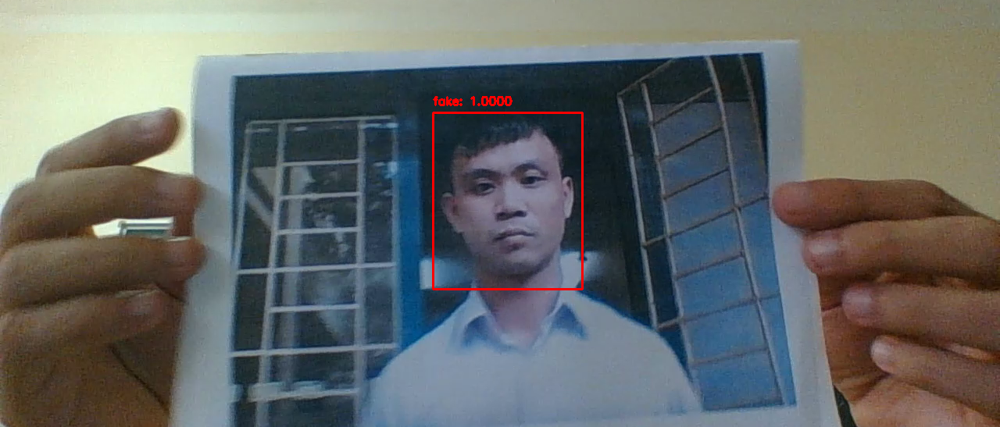
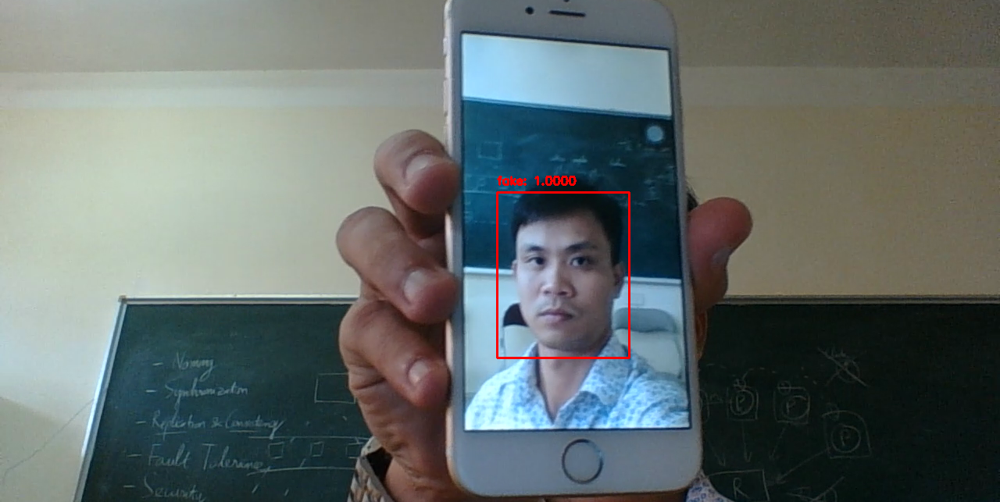
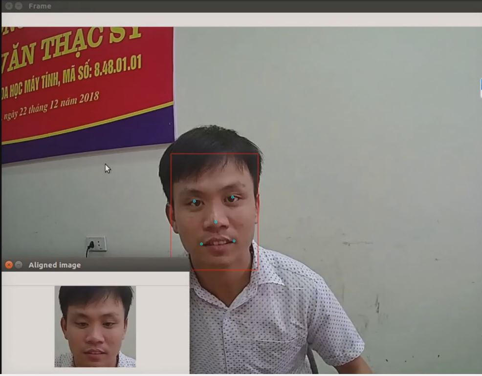
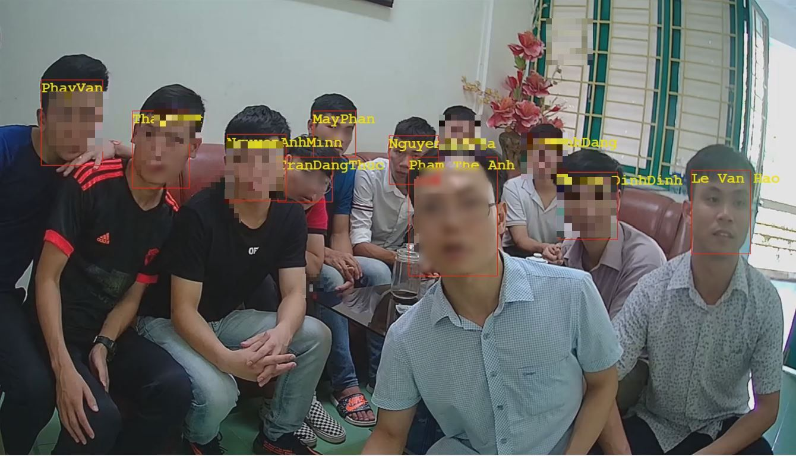

Research
I am particularly interested in image and video processing, especially video processing with deep learning methods. Hereafter, you will find a summary of the projects that I participated.
PVCD: Partial Video Copy Detection (2020-current)
This topic also is my PhD thesis at LIFAT Laboratory, France. In this PhD, we try to develop a method to identify and locate one or more segments of a long testing video have been copied (transformed) from the reference videos dataset.
 |
||
| Reference video(s) | Copied detection | |
FAS: Facial anti-spoofing (2019-2020)
This project was fully funded by HDU University. In this project, we tried to develop a deep learning model in order to prevent false facial verification by using a photo, video for an authorized person's face in camera streams.
|  |  | |
| Print attack | Replay/video attack | Demo video |
FR: Face Recognition (2018-2020)
This project included several deep learning models for face detection, aligment and recognition. This solution also ranked at 5th in the Vietnamese AI competition with 94.5% accurracy. This project was then applied by some Vietnamese companies as a trial-version product.
|  |  | |
| Face detection | Face Recognition | Demo video |
Softwares and Tools
- The STVD-PVCD Dataset: This dataset is devoted to evaluating the performance of partial video copy detection methods in computer vision. Homepage
- The STVD-FC Dataset: This dataset is related to the Fact-checking problem and polical video analysis. Homepage